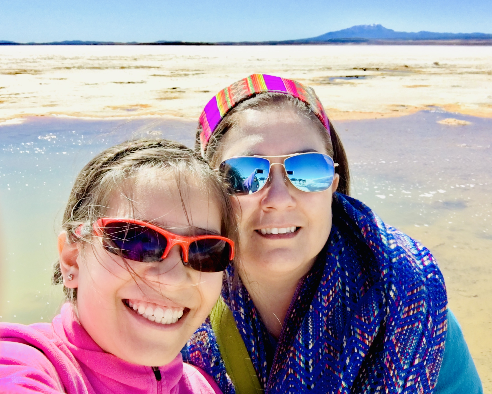

Jhenny Villagra
I am an Innovative, results-oriented leader with successful record leading strategic planning, business operations and financial management, procurement and project management for corporate initiatives and implementation of continuous improvement initiatives. Experience developing people - process - technology synergies by building high functioning teams and implementing innovative solutions and data-driven decision-making models to deliver on business objectives.
CORE COMPETENCIES : Leadership & Operations Management, Strategic Planning, Risk Management and Procurement Project Management, Agile Methodology, Process Improvement, BPI, Six Sigma, Change Management, Government Administration, internal controls and compliance with good understanding of legislation and regulation, Implementation of complex costing models